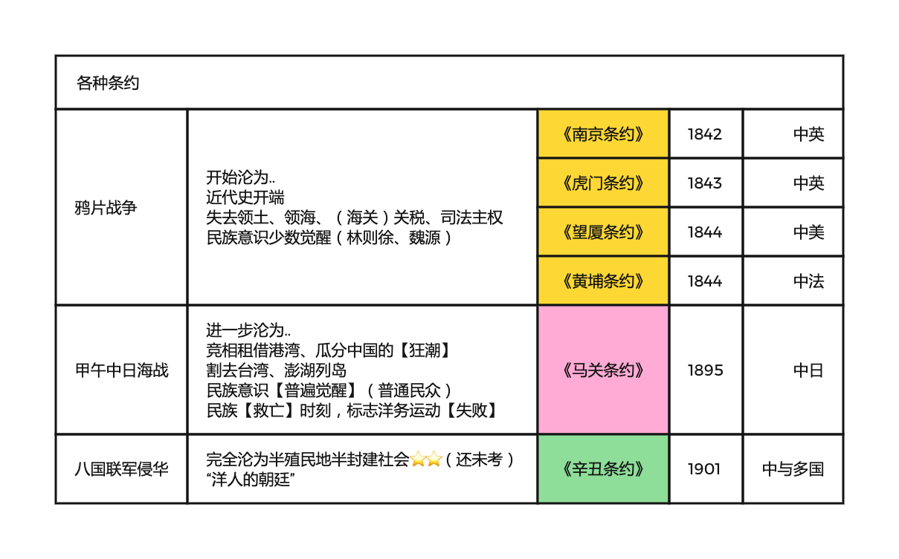
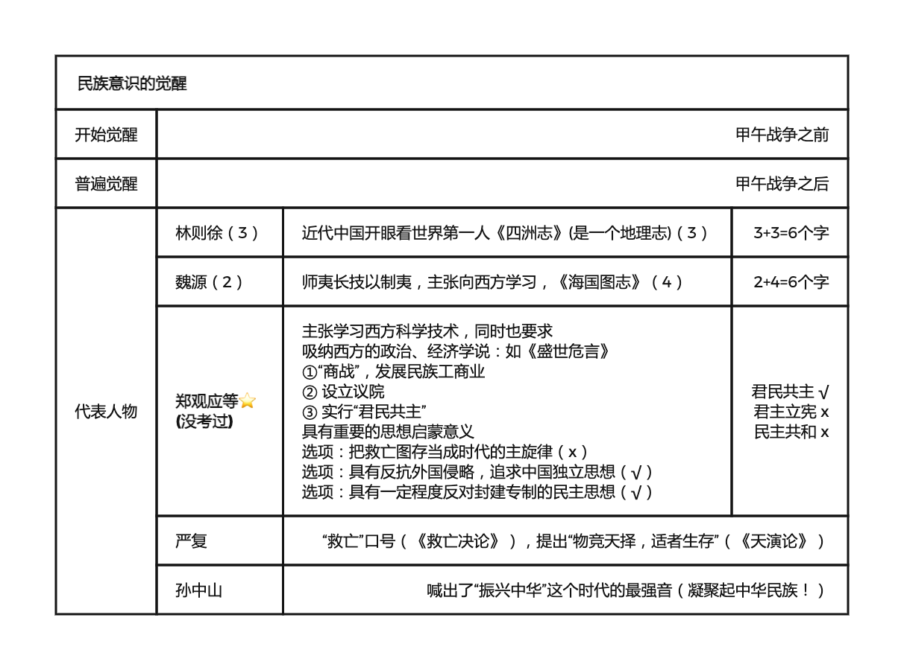

2022.09.11

| 战争 | 时间 | 条约 | 半殖半封 | 反抗 | 民族意识 |
|---|---|---|---|---|---|
| 鸦片战争 | 1840 | 南京(第一)、虎门、望厦、黄埔 | 开始 | 太平天国，洋务 | 少数觉醒 |
| 甲午中日海战 | 1894-1895 | 马关（割台湾） | 进一步 | 维新运动1989 | 普遍觉醒 |
| 八国联军侵华 | 1900 | 辛丑 | 完全 | 辛亥革命 | |
| 五四运动 | 全面觉醒 |
英国占领香港：《南京条约》《北京条约》《拓展香港界址专条》
割让台湾：日本《马关条约》
收回台湾、澎湖列岛：《开罗宣言》《波茨坦公告》《日本投降书》《中日联合声明》
